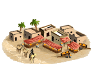
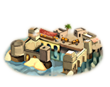

RTR: Imperium Surrectum
RTR: Imperium SurrectumSpices Trader
3 levels, each replacing the one before it — you upgrade in place rather than building alongside.
Spice Stall (Urban) → Aromas Market (Urban) → Spices Exports (Urban)
Levels at a glance
| Level | Cost | Build time | Minimum settlement | Upgrades to | Level | Cost | Build time | Minimum settlement | Upgrades to | ||
|---|---|---|---|---|---|---|---|---|---|---|---|
| Spice Stall (Urban) | 2,000 | 2 | large town | Aromas Market (Urban) |  | Aromas Market (Urban) | 5,000 | 5 | city | Spices Exports (Urban) | |
 | Spices Exports (Urban) | 12,000 | 8 | large city | — |
Costs in denarii, build time in turns.
Spice Stall (Urban)

A modest spice trading operation, adding flavor to both food and economy.
Spice up your life, or at least your food.
A small-scale spice trader has set up shop here, bringing in exotic spices from distant lands. The demand for flavour and luxury is ever-growing, and this trader is more than happy to oblige.
While the supply may be modest, the impact on the local cuisine (and the trader’s profits) is undeniable, with the aroma of far-off lands in one tiny marketplace.
| Cost | 2,000 denarii | Build time | 2 turns | Minimum settlement | large town | Upgrades to | Aromas Market (Urban) |
Requirements — all of these must hold before this level can be built.
- any faction
- Local Market at Local Barter or above is built here
- the region does not have the hidden resource
nobuild(nobuilding) - the region has the spices resource
- no building tagged
urban_exploitsis built or queued here (no_other_urban_exploits) - Government Building
Show the condition as the game files write it
factions { all, } and building_present_min_level market trader and nobuilding and resource spices and no_other_urban_exploits and requires_gov
What it does
- +1 trade income
- +1 population growth
Aromas Market (Urban)
A significant spice trading operation, adding a touch of luxury to the region.
The more exotic the spice, the higher the price.
This bustling centre of scents and flavors, where spices are traded like gold, has expanded its reach, importing spices from across the known world.
From pepper to cinnamon, these goods bring an air of sophistication and wealth to the region.
The traders are all too happy to benefit from the ever-growing hunger for rare flavors.
| Cost | 5,000 denarii | Build time | 5 turns | Minimum settlement | city | Upgrades to | Spices Exports (Urban) |
Requirements — all of these must hold before this level can be built.
- any faction
- Local Market at Local Market or above is built here
- the region does not have the hidden resource
nobuild(nobuilding) - the region has the spices resource
- Government Building
Show the condition as the game files write it
factions { all, } and building_present_min_level market market and nobuilding and resource spices and requires_gov
What it does
- +3 trade income
- +2 population growth
Spices Exports (Urban)

Spices are being exported far and wide, enriching the region and bringing a touch of the exotic to distant lands.
Spices aren’t just for food, they’re for fortune.
With spices now in high demand across the Mediterranean, this region has turned into a centre of spice exportation, sending the wealth of exotic lands to foreign ports, one spice jar at a time. It also supplies your capital with large quantities of spice, thu improving its trade income.
The merchants’ coffers grow heavier with each shipment sent abroad, and the region’s wealth is spiced with opportunity. The exotic flavors of the East are not just on the plates, they’re in the pockets.
| Cost | 12,000 denarii | Build time | 8 turns | Minimum settlement | large city |
Requirements — all of these must hold before this level can be built.
- any faction
- Local Market at Forum or above is built here
- the region does not have the hidden resource
nobuild(nobuilding) - the region has the spices resource
- anywhere in your empire does not have the hidden resource
spices_supply_built(not_spices_supply_built) - Direct Rule or Homeland
Show the condition as the game files write it
factions { all, } and building_present_min_level market forum and nobuilding and resource spices and not_spices_supply_built and direct_govs
What it does
- +5 trade income
- +3 population growth
- (Capital) Trade bonus: +20%
What the shorthands in those conditions stand for (5)
| Shorthand | Stands for | Shorthand | Stands for | Shorthand | Stands for | Shorthand | Stands for |
|---|---|---|---|---|---|---|---|
direct_govs | building_present governmentC or building_present governmentD | no_other_urban_exploits | no_building_tagged urban_exploits queued | nobuilding | not hidden_resource nobuild | not_spices_supply_built | not hidden_resource spices_supply_built factionwide |
requires_gov | building_present governmentA or building_present governmentB or building_present governmentC or building_present governmentD or not is_player |